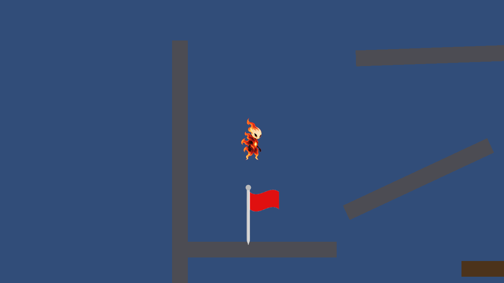
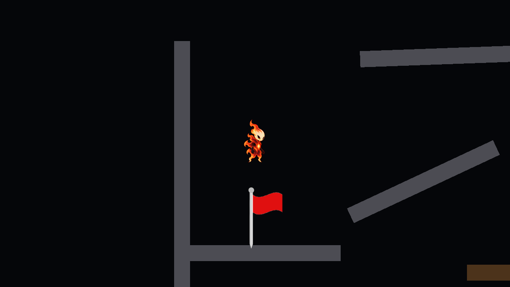
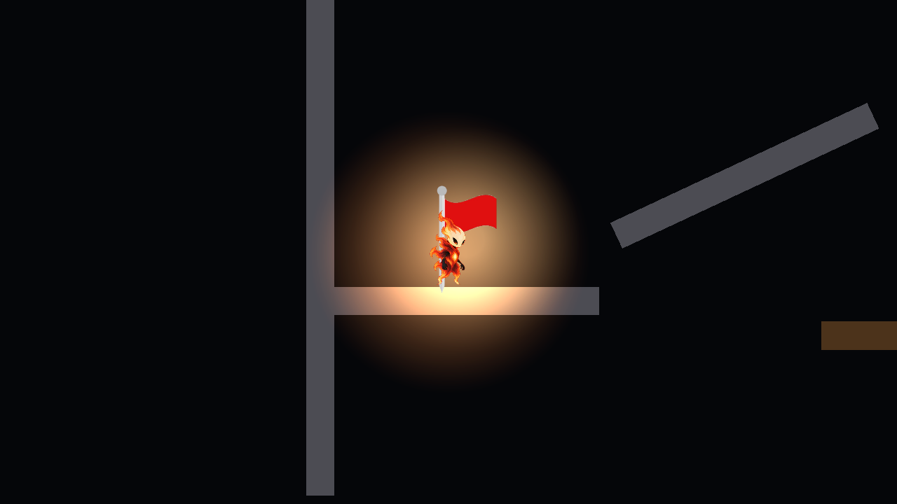
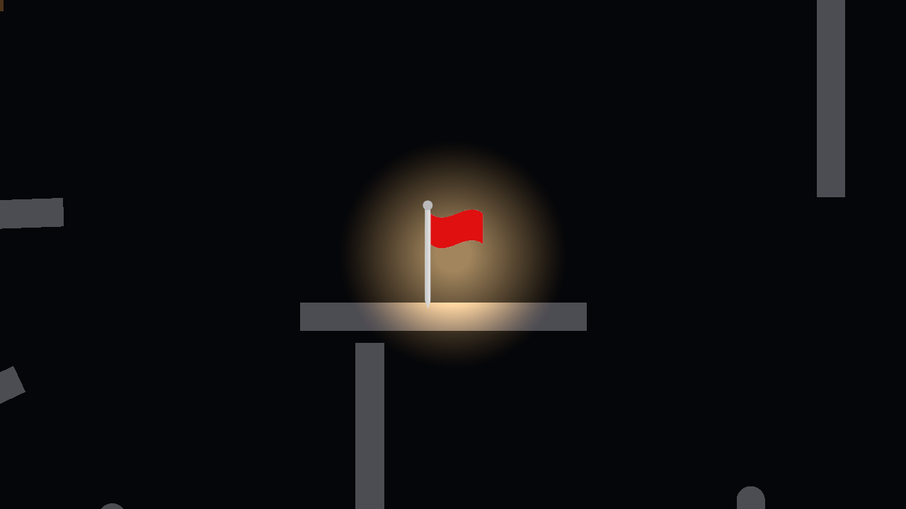

YuchanScene · 실제 Light2D 발광
Player와 CheckPoint 두 개에 실제 점광원과 볼륨 후광을 추가했다. 주변 지형은 광원 가까이에서만 밝아진다.
이전 · 대상의 밝기만 구분
수정 후 · 플레이어와 체크포인트의 후광
Play · 플레이어 낙하 후에도 광원 추적
Play · 두 번째 체크포인트의 주변 조명
원본 씬 두 개와 공용 프리팹 보존. YuchanScene 저장·재열기 확인.
변경 및 Inspector 조정 안내